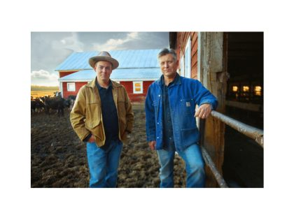

What's Up near Brandon
Updated 17 Nov 2026
Near Brandon
· ·
Your location stays on this device.
Tuesday 17 November · today

Fletcher Free's Fictional Book Club: The Wilderness
social
An era-defining novel about five Black women over the course of their twenty-year friendship, as they move through the dizzying and sometimes precarious period between young adulthood and midlife—in the much-anticipated second book from…

Middlebury Afropop Band and African Music and Dance Ensemble Joint Concert
musicfree
Middlebury Afropop Band and African Music and Dance Ensemble Joint Concert

Dark Star Orchestra
music$40-$60
7:30PM Lobby doors open @ 6:30PM Seating begins @ 7:00PM Tickets: $40, $50, $60 + tax/fees Complimentary vouchers are not valid for this performance. Performing to critical acclaim for nearly 30 years and over 3300 shows, Dark Star…
Wednesday 18 November · tomorrow
Welcome Blanket Project
artfreeContinues through Dec 31.
Welcome Blanke t is a platform for engagement that transforms the abstract concept of immigration into a tangible crowd-sourced artistic action. We ask you to use your head, heart, hands, and histories to craft the country we wish to see.…

"Jamie Wyeth & the Unflinching Eye" Documentary Screening
film$15
See the first feature documentary on painter Jamie Wyeth, who turned the same unflinching eye on JFK, Andy Warhol, and the animals on his own Maine farm.

Mid Day Organ Recital with Robert Ludwig
musicfree
Robert Ludwig performs a marvelous selection of organ music on the grand Gress-Miles pipe organ in the College Chapel at Middlebury College. Enjoy a bit of music during the Wednesday passing period! Come and go as your schedule requires.…


Pre-Concert Lecture by Stewart Goodyear
social
Learn more about this concert’s music in a free pre-concert lecture by Stewart Goodyear.

Imani Winds and Stewart Goodyear, Piano
music
The Grammy award-winning Imani Winds joins forces with dynamic pianist and composer Stewart Goodyear.

The Addams Family (Middlebury College Musical Theatre)
theater$5-$10
This hilarious Broadway musical brings everyone's favorite spooky family to life in a story filled with love, laughter, and a little bit of the macabre.
You Can See Everything (film)
filmShowtimes vary by day; runs Wed 11/18-Thu 11/19.
Ebenezer (film)
filmShowtimes vary by day; runs Wed 11/18 through Sun 11/22.
Thursday 19 November

Quality Ski Time Film Tour
film
7:00 PM Doors open at: 6PM Tickets: $15 + tax/fees Ski movies will forever be a part of ski culture. Nothing else can match the community and excitement created by watching films with friends. So, why would you settle for just one film?…


Lebanon High School Fall Concert
music
Join the award-winning Lebanon High School music program for their annual fall concert, featuring performances by the Concert Band, Chorus, ...

Wind Symphony Concert
musicfree
The VTSU Castleton Wind Symphony, directed by Professor Joshua Thompson, presents a night of musical entertainment! Soundings students may only attend ONE of the three VTSU Castleton Music Program’s Concerts for credit. These concerts…
The Addams Family (Middlebury College Musical Theatre)
theater$5-$10
This hilarious Broadway musical brings everyone's favorite spooky family to life in a story filled with love, laughter, and a little bit of the macabre.


Good Time Line Dancing Lesson
dance
Dust off those boots, grab a partner (or fly solo!), and get ready for a night filled with:
Friday 20 November

Golden Girls: The Laughs Continue
theater
7PM Lobby doors open: 6PM Seating begins: 6:30PM Tickets: $29, $39, $49, $59 + tax/fees Contains adult themes, recommended for ages 18+ The Golden Girls are back in an all-new show! 2026 finds Sophia out on bail, after being busted by…


Fatherland (film)
film
In 1949, German writer Thomas Mann and his daughter Erika embark on a road trip across a Germany in ruins, from US-dominated Frankfurt to Soviet-controlled...

Golden Girls: The Laughs Continue
theaterA separate tour stop from the Rutland Paramount date the same week.
SOLD OUT! This campy drag production asks: “What kind of shenanigans would Dorothy, Blanche, Rose, and Sophia get into today?”

Patty Casey, Colin McCaffrey & Erica O'Hara
music$20-$25
A love of Bluegrass and traditional genres from three exceptional artists: Patty Casey, Colin McCaffrey and Eric O


Tara McGowan & the Art of Japanese Paper Theatre
art
Tara McGowan & the Art of Japanese Paper Theatre -
The Addams Family (Middlebury College Musical Theatre)
theater$5-$10
This hilarious Broadway musical brings everyone's favorite spooky family to life in a story filled with love, laughter, and a little bit of the macabre.

Big Shrimp with special guest Ryan Dempsey
music
Big Shrimp brings its high-octane blend of danceable funk, exploratory rock, and fearless improvisation to ZenBarn. Formed in 2024 in Bridgeport, CT, the
The Hunger Games: Sunrise on the Reaping (film)
filmShowtimes vary by day; runs Fri 11/20 through Thu 12/3.
Saturday 21 November

Equinox Documentary Film Festival 2026
film
The Equinox Documentary Film Festival returns to the Savoy Theater once again. Come and join us for the...


The MET Live in HD: "Macbeth"
film$10-$24
Verdi’s thrilling take on the immortal Shakespearean drama centers on the doomed Scottish king, haunted by the ghosts of his murderous ascent to the throne, and his power-mad wife, whose ruinous ambition damns them both.

Community Toy Swap
socialfreeIncluded by your exception (Burnham Presents Music Series, Lincoln).
Event in Lincoln, VT by Elizabeth Keenan on Saturday, November 21 20268 posts in the discussion.


The Nutcracker
dance$21.50-$46.50
Celebrate the magic of the holiday season with The Nutcracker, Syracuse City Ballet's beloved annual tradition. Featuring Tchaikovsky's iconic score, dazzling choreography, exquisite costumes, this timeless holiday ballet delights…
Greg Freeman
music$25-$27
All Ages--Greg Freeman, All Set The BoneGreg Freeman won’t be getting comfortable anytime soon. Across New Mexico, Vermont, Los Angeles, and a long stretch of tour stops hooking those places together,

Sunday 22 November

The Brother Brothers
music$25-$30 (kids 12 & under $12)Included by your exception.
“wonderful ... fabulous old-time playing and sibling harmony.” — NPR

Warren Miller Presents: Days Off
film$25-$27
Follow along with Warren Miller's 77th installment, DAYS OFF, chasing unscripted joy across Alaska, Canada, Japan, Deer Valley, France and more.
The Nutcracker
dance$21.50-$46.50
Celebrate the magic of the holiday season with The Nutcracker, Syracuse City Ballet's beloved annual tradition. Featuring Tchaikovsky's iconic score, dazzling choreography, exquisite costumes, this timeless holiday ballet delights…

2nd Annual Thanksgiving in a Box
socialfree
The 2nd Annual Thanksgiving in a Box will take place on Sunday, November 22nd from 9 a.m.-12 p.m. at the Former Ripton Elementary School. All are invited to fill a box with FREE Thanksgiving dinner ingredients. Interested in donating? Find…
Monday 23 November
Dinoman at New Haven Town Hall!
socialfree
We are so excited to welcome Bob Lisaius, aka Dinoman, back to New Haven Town Hall! This high-energy, interactive performance blends science, storytelling, and humor to bring dinosaurs and prehistoric life vividly to life. \n
Tuesday 24 November

Thursday 26 November

Thanksgiving Buffet
social$60 a person
Thanksgiving 2026 $60.00/person Served Choice of: Oyster stew Blue Hubbard Squash Bisque Bread rolls Carved Local Sliced beef rib roast or tenderloin Turkey-herb gravy & cranberry pomegranate sauce Cold Buffet WIld Rice Salad Mezze Platter…

Friday 27 November

Art Show featuring Molly Hawley
artDate on the Waybury site reads Nov 28; the inn's own listing is used here.
MORE INFO TO COME

An Evening with Club D'Elf
music
Club D'Elf returns to the Barn for a full evening of hypnotic, genre-bending live music. Expect long, deep grooves where Moroccan trance, dub, and jazz
Saturday 28 November

Wine Release Weekend
social
A new and even more delicious Sparkling Marquette! 10% off glasses and bottles of the new wine all weekend. NV Sparkling Marquette A traditional method, lightly sparkling red inspired by the great wines of Lambrusco. Light maceration on…

No Strings Marionette Company Presents "Scrooge, A Christmas Carol"
theaterIncluded by your exception.
364e7289-f1bc-4f05-8c59-2f0e0b4f7ef4

Dead Set: A Celebration of the Grateful Dead
music$25-$35
Adventurous jams, soulful guitar, and the timeless music of the Grateful Dead, with room to dance.
House of Sparkle
music$15-$20
Screw the sales. Buy yourself a night to remember. This Black Friday, skip the parking lot battles and the stuff nobody needs, and spend your night on something FUN: House of Sparkle. Picture it. The

Weird Phishes: Radiohead Through the Lens of Phish
music
Weird Phishes brings Radiohead through the lens of Phish to ZenBarn! The band reimagines Radiohead's catalog with the improvisational spirit, extended jams
Sunday 29 November

Vermont Fiddle Orchestra Winter Concert
musicIncluded by your exception.
8e410f48-5ab3-42f8-9498-b2f2007ce36b
Monday 30 November
Bonobo
music$40-$45
All Ages--“Oh yeah, I guess I did do some of that stuff," says Simon Green, as he reflects on his 25-year-plus career as the man behind the music of Bonobo. It’s a typically self-effacing respons
Tuesday 1 December

Taking Flight, Improvisational Practices Class Showing
dance
Taking Flight is an informal evening of improvisational dance (by the students in DANC 261), music (by Deborah Felmeth and Ron Rost), and light design (by Bert Crosby).

Jazz Ensemble Concert
musicfree
The VTSU Castleton Jazz Ensemble, directed by Professor Michael Craner, presents a night of musical entertainment! Soundings students may only attend ONE of the three VTSU Castleton Music Program’s Concerts for credit. These concerts…
Wednesday 2 December

Raku & Pit Firing Workshop
art$70
Discover the magical process of Raku firing, where fire and smoke combine with creativity to produce stunning, one-of-a-kind pieces. Explore pit firing, experiment with surface decoration, learn about glazing methods, and participate in…
2DEAD BOYZ + The Underachievers
music$25-$100
All Ages--2DEAD BOYZ is the gritty new incarnation of East Coast hip-hop firebrands Meechy Darko and Zombie Juice, of the Flatbush Zombies. Forged from a decade of macabre creativity, psychedelic expl

Coffee Pop up! little seed
social
Stop by the MAC lower lobby for hot or iced espresso-based drinks from little seed Coffee Roasters’ mobile cart! Card or venmo only. Watch for the cart on the first Wednesday of the month.

Thursday 3 December

Vermont Holiday Festival
social
Experience the Vermont Holiday Festival December 3 through 5, featuring festive trees, holiday shopping, live music, visits with Santa, tree raffles, kids
Surveilled Film Screening
filmfree
Produced by Pulitzer Prize-winning investigative journalist Ronan Farrow, "Surveilled" uncovers the insidious ways in which our daily lives are being surveilled by the state. In a gripping chase, Farrow travels across the world following…
Midd Night Stroll
socialOccurs Dec 3 and Dec 10.
Mark your calendars for Midd Night Stroll evenings in downtown Middlebury. Come out from 5:00-8:00pm on Thursday, December 3rd, and Thursday, December 10th, 2026 for specials, promotions, food trucks and pop-ups downtown. Visit Cannon Park…

Friday 4 December
Family Music Party: Festival of Lights Party
music$25
Join together with friends for MCMC’s newest family friendly musical offering! Led by beloved early childhood music educator Miss Anna, our seasonal Family Music Parties will include: Interactive songs, stories, and play A seasonal craft A…

Holiday Gift Bags: Block Printing on Fabric
art$80
Get creative this Holiday season while exploring block printing and textile design! Carve your own stamp and custom print an assortment of festive cotton gift bags! Experiment with colors, patterns, and repeat designs while getting…

Date Night: Wheel Throwing
art$80/coupleThis session is full/waitlist; a second session runs Dec 11.

Hadestown: Teen Edition
theater
Lebanon High School’s Wet Paint Players takes on the dark musical retelling of the ancient Greek myth of Orpheus and Eurydice.
lespecial
music$25-$30
All Ages--lespecial is redefining the term “power trio”. The multi-instrumentalists from Connecticut continue to push the boundaries of what a three-piece band is capable of both live and in the studi

_edited.jpg)
Rachel Feinstein (Vermont Comedy Festival)
theaterIncluded by your exception.
49d3d846-6264-4922-892d-10c397f87c96

Saturday 5 December

Fused Glass Workshop: Ornaments and Winter Suncatchers
art$105
Join fused glass artist Caroline Quick for this beginner workshop to create ornaments or winter sun-catchers and immerse yourself in your own, unique artistic journey! These are perfect for brightening up your home or as a gift for someone…

Throwing Larger Pieces
art$55
Looking to learn how to throw larger pieces? This workshop will guide you through the process of gradually creating larger forms on the wheel, working at your own pace and at the level you’re currently at. We’ll work with 3-10 pounds of…

Grand Kyiv Ballet Presents the Nutcracker: Symphony of Lights
danceIncluded by your exception.
79497517-a0aa-4ce9-9b25-9f2a8c234dfb

Agricola Farm Dinner Club
socialabout $95 a person
Alessandra and Stefano offer a seasonal menu from Agricola Farm and nearby like-minded farms. Each course is introduced with stories of the origin of the recipes or the special ingredients that are featured. The meat they use comes from…
Hadestown: Teen Edition
theater
Lebanon High School’s Wet Paint Players takes on the dark musical retelling of the ancient Greek myth of Orpheus and Eurydice.

Kalos
music$12-$30Included by your exception.
Three innovative interpreters and composers of Celtic roots music:


Four Guitars
music$20-$25
The concert features 4 prominent local area guitarists demonstrating four distinctly different genres of music and each played instrumentally on a solo guitar.
Karina Rykman
music$25-$30
All Ages--Karina Rykman plays bass, sings, jumps around, and laughs a lot. In doing so, she has garnered rare attention and avid listenership. Straddling the worlds of jam rock and indie pop drenched

The MET Live in HD: "Samson et Dalila"
film$10-$24
Saint-Saëns’s operatic take on the classic biblical story follows Samson, the hero of legendary strength, and Dalila, the seductive Philistine whose beauty overpowers him.
Sunday 6 December

Kalos
musicfreeA separate tour stop from the Dec 5 Burnham Hall (Lincoln) show.
Kalos is drawn to water. Every performance is like stepping into a river—they never play a song the same way twice. They make music inspired by the maritime traditions of Scotland, Ireland, Scandinavia and North America. Their album…

THT Fall Class Culmination
theater
Puppets, Taiji, monologues, and dance, all from people who spent the fall learning something new at THT.

Randolph Singers Holiday Concert
musicIncluded by your exception.
7a5e6e95-3ef6-4315-9e11-fe67912d0c39
Calling in the Dark: Solstice & Holiday Community Sing
musicActual dates are Dec 6 and Dec 13.
Hadestown: Teen Edition
theater
Lebanon High School’s Wet Paint Players takes on the dark musical retelling of the ancient Greek myth of Orpheus and Eurydice.

Land: I Saw and I Didn't See (film)
film
This screening features a post-film discussion with director Orly Yadin Born into a family of influential Zionist thinkers...
Monday 7 December
Tuesday 8 December

Sue Foley + GA-20
music$35-$40
All Ages--Sue Foley is a multi-award-winning blues guitarist, singer, and songwriter whose latest album, One Guitar Woman: A Tribute to the Female Pioneers of Guitar, was nominated for the 2025 GRAMMY
Wednesday 9 December

The Bouncing Souls
music$32.50-$36
All Ages--The Bouncing Souls are something of a punk rock institution. The band have been consistently churning out their beloved brand of anthemic punk since 1989, and have earned an intensely loyal
Thursday 10 December
Midd Night Stroll
socialOccurs Dec 3 and Dec 10.
Mark your calendars for Midd Night Stroll evenings in downtown Middlebury. Come out from 5:00-8:00pm on Thursday, December 3rd, and Thursday, December 10th, 2026 for specials, promotions, food trucks and pop-ups downtown. Visit Cannon Park…

Albert Cummings
music$30-$35
All Ages | Seated Show--Albert Cummings is an American blues guitarist, singer, and songwriter from Massachusetts whose fiery guitar work and soulful voice have made him a standout in modern blues-roc
Good Time Line Dancing Lesson
dance
Dust off those boots, grab a partner (or fly solo!), and get ready for a night filled with:
Friday 11 December


Tony Trischka's Holiday Show: Of a Winter's Night
music$35-$45
Tony Trischka brings his melodic inventiveness to an acoustic celebration of bluegrass and Americana, weaving beloved carols, spirited fiddle tunes, and unexpected gems.


Old Crow Medicine Show
music
A festive evening of foot-stompin’ Christmas classics, fan-favorite Old Crow hits, and songs from their recent holiday album.

CVUUS Contra Dance?
danceThe feed's own title has a question mark; date may be tentative.

Lúnasa Irish Solstice Celebration
musicIncluded by your exception.
678f0c1f-e445-4712-9bed-ed34f4d670c0
Saturday 12 December


Bread + Puppet: The Christmas Story
theater$20
Bread & Puppet revives its 1962 retelling of the first Christmas, an ancient story remade for today and a cry for an end to war.


Winter Winemaker Dinner
social
Join us in the winery for a four-course Italian-inspired meal from our friends at Monti Verdi Salumi thoughtfully paired with our wines. We’ll taste young wines from barrels and tanks as we share about the 2026 season, and you’ll be the…

Eric Mintel Quartet: A Charlie Brown Christmas
music
A jazzy, jingly program celebrating Vince Guaraldi’s iconic soundtrack and other timeless holiday favorites.

The Walrus: A Mind-Blowing Beatles Tribute
music$10-$20
All Ages--"The Beatles get a mind-blowing tribute."-RollingStoneThe Walrus has been faithfully and energetically recreating the music of The Beatles (proper and solo works) since 2002. All m
BIOMYTH
music$25-$30
18+--BIOMYTH: The Rave of your FantasyA new immersive rave experience bringing a cinematic dark fantasy environment to Burlington, featuring Brooklyn-based artist nextdimensional and local Vermont DJs


Pink Martini All-Stars: A Season of Stars
music
The globe-trotting “little orchestra” is back with a new holiday show wrapped in the band’s signature mix of catchy classic ...
A Very Merry Middlebury
socialfreeIncludes photos with Santa at Town Hall Theater, 9-11am.
Sunday 13 December

A Candlelight Service of Lessons and Carols for Advent and Christmas
socialdonations accepted
The Scott Center sponsors and hosts numerous ongoing events throughout the year. Join us for any and all that appeal to you, and be sure to check back often to see what’s new and coming up!
Calling in the Dark: Solstice & Holiday Community Sing
musicActual dates are Dec 6 and Dec 13.
Tuesday 15 December

Met Opera: Samson et Dalila (Saint-Saëns)
film
12PM Lobby doors open and seating begins: 11:30AM Tickets: $20 (includes tax) + fees Bring a friend for free! Purchase your admission ticket in advance, and we\'ll save a seat for your guest - on us! Just stop by the Box Office before the…

Spells for Safety: A Community Poetry Workshop
social
Spells for Safety: A Community Poetry Workshop (adults and teens) -

Windborne Presents Music of Midwinter
musicIncluded by your exception.
2061b88d-ba61-4052-8a37-47fc677e6b2a
Wednesday 16 December

Thursday 17 December


Choir of Clare College, Cambridge
musicA separate tour stop from the Dec 18 St. Stephen's (Middlebury) performance.
Choir of Clare College, Cambridge -
Good Time Line Dancing Lesson
dance
Dust off those boots, grab a partner (or fly solo!), and get ready for a night filled with:
Friday 18 December

Night Fires
music
Since 1982, Night Fires has been a weave of words, songs, dances and music from many places, peoples, and languages

The Choir of Clare College, Cambridge
music$25-$40
One of the world's leading university choirs ends its U.S. tour at St. Stephen's in Middlebury.

Honky Tonk Christmas!
music$20-$25
Jim Rooney and Colin McCaffrey are happy to celebrate the season again, with Dave Rowell, Danny Coane & Don Schabner for a Honky Tonk Christmas evening!
Saturday 19 December


New York Theatre Ballet: The Nutcracker
dance
This holiday extravaganza, danced to Tchaikovsky’s beloved score, is one hour of wonder that’s fun for all ages.


Sunday 20 December

Met Opera: The Magic Flute (Mozart)
film
1PM Lobby doors open and seating begins: 12:30PM Tickets: $20 (includes tax) + fees Bring a friend for free! Purchase your admission ticket in advance, and we\'ll save a seat for your guest - on us! Just stop by the Box Office before the…

Annual Messiah Sing
musicdonations accepted
A holiday delight - we welcome you to come sing, play, watch and listen to the annual Middlebury Messiah Sing, December 20, 2026 starting at 2pm at the Congregational Church of Middlebury, right at the corner of Route 7 and Main Street.…
Tuesday 22 December

Home for the Holidays
music
Hans Williams and a few folk-rock friends (including Brooks Hubbard) share the stage for this one-of-a-kind benefit concert.
Wednesday 23 December

Thursday 24 December
Saturday 26 December

Monday 28 December

Farmhouse Dinner
socialprix fixe, reservations required
Tuesday 29 December
Farmhouse Dinner
socialprix fixe, reservations required
Wednesday 30 December

Thursday 31 December

New Year's Eve Celebration & Fireworks
social
Family-friendly holiday celebration and fireworks in Killington, VT


New Year's Eve Dinner & Dance
social$50 dinner, $15 dancing only
Start Making Sense: A Tribute to Talking Heads
music$29.50-$39.50
All Ages--If David Byrne is one of the geniuses of modern times, then Start Making Sense is a tribute to genius. The musicians in this 7-10 piece Talking Heads Tribute take pride in faithfully recreat
Friday 1 January
Animalia: Our Shared World (opening)
artRuns through Jan 30.

Mystic Dead: Through the Ages - The '60s & '70s
music
Mystic Dead rings in 2027 at Zenbarn with two nights of Grateful Dead music, taking the room through the songbook one era at a time. Night 1 is the '60s and
Saturday 2 January

The Seamus Egan Project
music$25-$30 (kids 12 & under $15)Included by your exception.
Seamus Egan, Moira Smiley & Yann Falquet, three internationally renowned award- winning trailblazers of World, Irish and Quebecois music.

Mystic Dead: Through the Ages - The '80s & '90s
music
Night 2 of Mystic Dead's New Year's run at Zenbarn picks up where Friday left off, with the Grateful Dead's '80s and '90s songbook: the Brent Mydland years,
Monday 4 January

Tuesday 5 January

Thursday 7 January

Creating a Teapot on the Wheel (series, through Feb 18)
art$315
A handmade teapot is a timeless ceramic form that blends beauty, function, and craftsmanship. Creating a teapot is both a technical and artistic endeavor, requiring thoughtful attention to form, function, and aesthetics at every stage of…
Friday 8 January
Farmhouse Dinner
socialprix fixe, reservations required

Juston McKinney's Comedy Year in Review 2026
theater
Have the last laugh with Juston as we put 2026 behind us! Come see why NH Magazine named him “Best ...
Saturday 9 January
Farmhouse Dinner
socialprix fixe, reservations required
Sunday 10 January
Thursday 14 January

Grace Potter and The Trespassers
music
8PM Lobby doors open: 7PM Seating begins: 7:30PM Tickets: $69, $79, $89, $99, $129 + tax/fees Complimentary vouchers are not valid for this performance. With her new album Trespasser, Grace Potter introduces a beautifully unruly cast of…
Friday 15 January
Farmhouse Dinner
socialprix fixe, reservations required
Saturday 16 January

Paula Poundstone
theater
7PM Lobby doors open: 6PM Seating begins: 6:30PM Tickets: $30, $40 + tax/fees Iconic comedian Paula Poundstone is known for her smart, observational humor and a spontaneous wit that has become the stuff of legend! She regularly plays…
Farmhouse Dinner
socialprix fixe, reservations required
Weekly and ongoing

Weekly Free Poetry Workshop
Weeklysocialfree
Community Workshop Online only You will receive an invitation to join the Google Classroom within a week of joining. After accepting the invitation you will be receive notifications from the classroom, including scheduled classes.…


Rolling down the Tracks: Holiday Trains!
Ongoingartsocial
The elaborate Lionel train layout at the Henry Sheldon Museum in Middlebury, Vermont is an annual tradition, delighting all ages.

VTSU Faculty / Community Art Exhibit
Ongoingart
Come together as a community member and contribute a piece of art to be displayed in the gallery. Our closing ceremony for the exhibit will be Thursday, February 18 at 6 pm, powered by Concept3D Event Calendar Software